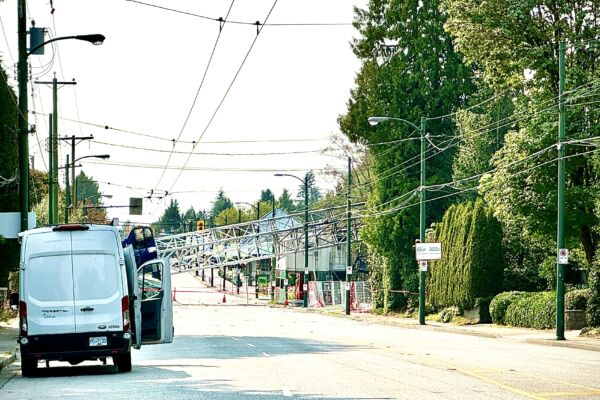

2024年8月6日傍晚，温西Dunbar社区的一个建筑工地发生大火，倒塌的塔吊横躺在西41大道上，预计将封路一周。（灵犀／） 【2024年08月09日讯】（记者李君成加拿大温哥华综合报导）周四（8月8日），温哥华消防局表示，温西邓巴（Dunbar）社区的六层楼建筑工地大火已被扑灭，起火原因不明，倒塌的塔吊（塔式起重机）很可能要横躺在西41大道上一周。周二晚6:30左右，温哥华西41街3477号与科林伍德街（Collingwood）交界处，熊熊大火从吞噬了这栋接近竣工的木结构建筑。火势失控，消防人员除了要搏击六层楼高的火焰，还得应对由火星引发的另外九处火灾。
烈火中，工地内的塔吊轰然倒塌，砸扁了一座民宅，破坏了电车线和电力线，造成南侧地区停电。
所幸没有居民受伤，但温哥华消防局官员表示，有消防员受轻伤。
据CBC报导，火灾发生时，11岁的Alice Kviselius正和她的母亲在附近家中的厨房里，“我当时和弟弟在家。他指着厨房窗外说，‘看，有火灾。’”“我们听到很多来自起重机和掉落木材的巨大声响。”
Alice的父亲Mioi Sawada刚下班回到家，大约在晚上7时他决定带全家人撤离。他们还帮助95岁的邻居一起撤离。
温哥华紧急支援服务部表示，由于火灾和随后的起重机倒塌，81名居民被疏散。一些居民已经返回家中，截至周三下午，紧急支援服务部门仍在为至少37人提供酒店住宿。
温哥华市发言人在一份给CBC的声明中说。“我们知道，并非所有被迫离开家园的人都已向紧急支援服务（ESS）登记；许多人暂时住在朋友或家人那里，未来可能会有更多人寻求帮助。”
据《温哥华太阳报》报导，莎乐美•马伊纳（Salome Maina）当时站在距塔吊150米的人行道上。她说，塔吊“像另一颗炸弹一样掉落，还落在电线上”，大家都在尖叫。
温哥华消防和救援服务副主任罗伯特•威克斯（Robert Weeks）说：“这样的大火会产生自己的风。火势如此猛烈，所有的木材都是火焰的燃料。”
温哥华市长沈观健（Ken Sim）也听到了爆炸声。他说，“火星飞溅在空中，落在数个街区之外”，火灾情况“极为危险”。火势的高温甚至熔化了街对面的房屋外墙。
对于温哥华消防队来说，周二的这个夜晚十分繁忙，因为两个小时前他们还在处理温哥华东区的一栋废弃公寓火灾。当时有39名消防队员和12辆消防车在现场。
据CBC新闻报导，温哥华消防局副局长皮埃尔•莫林（Pierre Morin）表示，周二晚上和周三早上被命令离开该地区的大多数居民可在周四回家。这些居民不包括被起重机撞到的房屋、因火灾而遭受重大损害的六间房屋（其中两间是完全损失）以及附近有危险棚架的一间房屋的居民。
莫林说，包括WorkSafeBC在内的当局需要先调查起火原因，因此，邓巴街与科林伍德街（Collingwood）之间的这段西41大道将继续封闭。◇
责任编辑：李盈